Lab SECURE HIGH-PERFORMANCE DATACENTER EDGE#
This lab will demonstrate how securely govern the Egress traffic.
1. General Objectives#
You are asked to interconnect the on-prem DC in New York to your MCNA. An Aviatrix Edge device has already been provisioned and it got already registered to the existing Aviatrix Controller.
Aviatrix Secure High-Performance Datacenter Edge solution gives power back to the network administrators to deliver cloud connectivity without compromise. The solution delivers encrypted, line-rate performance with single region, multi region, or multi cloud redundancy options and full visibility and troubleshooting capabilities end to end.
2. Initial set-up#
Here is a view of the initial topology:
{kind=link}
Fig. 1 Initial Topology#
All applications in AWS and GCP have only Private IP’s
These are the CIDR blocks per each CSP:
AWS = 10.0.1.0/24
GCP = 172.16.1.0/24
The AWS instance and GCP instance are running several services on the following ports: 1433, 1521, 443, 5000, and 50100.
During the initial setup, MCNA was deployed. Both AWS and GCP environments are connected using the Aviatrix backbone.
3. Gatus Dashboards#
All of the pre-deployed instances are running Gatus and attempting to connect to each other on various ports. There are two gatus dashboard(s), deployed to aws-gatus https://aws.pod#.aviatrixlab.com/ and gcp-gatus, https://gcp.pod#.aviatrixlab.com/ visualize this connectivity continuously and in real-time. Green means a tcp connection was successful and red means it was unsuccessful.
Note
Above on url replace the pod#, with your assigned pod# e.g for pod97 aws-gatus will become https://aws.pod97.aviatrixlab.com/
With pre-deployment and initial setup below is the gatus initial sample look 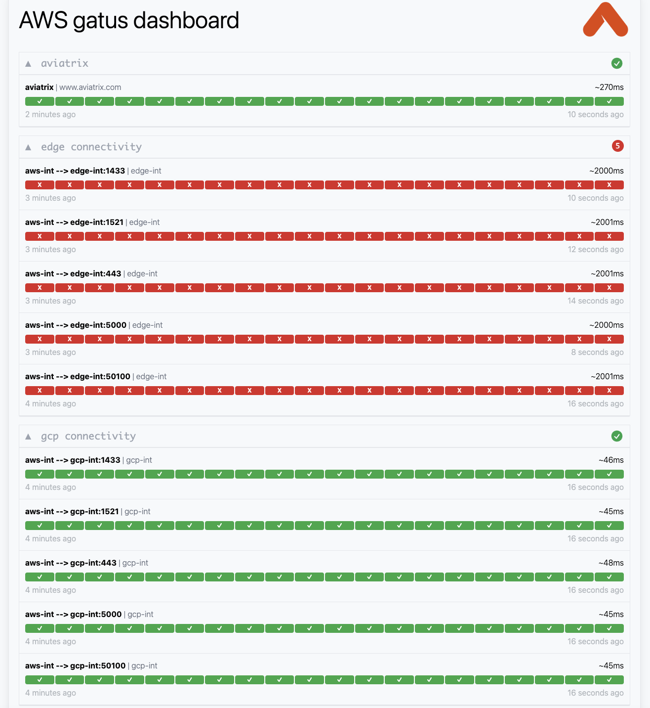
Note that the AWS/GCP and Edge connectivity sections are all red. These networks are not connected.
While AWS and GCP connectivity section are all Green. As These networks are already connected.
4. Edge Connectivity#
Edge gateway is already deployed as shown in below topology. 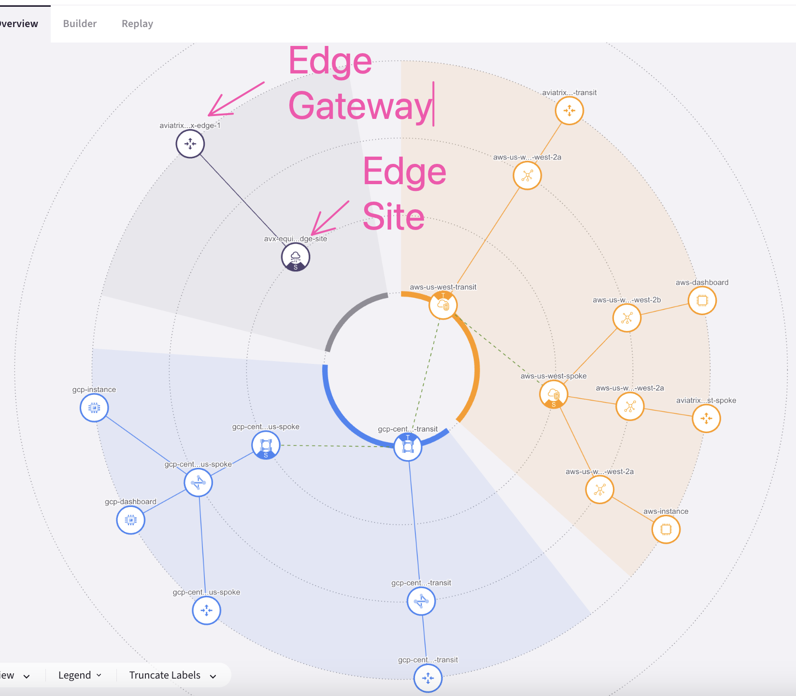
4.1. Attachment between Edge and the AWS Transit#
Let’s establish a peering between the Aviatrix Edge device and the AWS Transit Gateway in US-WEST-2.
In the topology shown below, there is a workstation named “Workstation Edge” connected to the LAN router. Once this connection is made, indicated by the grey links, initiate a ping from the workstation to verify connectivity. In the topology shown above, there is a workstation named “Workstation Edge” connected to the LAN router. Once this connection is made, indicated by the grey links, initiate a ping from the workstation to verify connectivity.
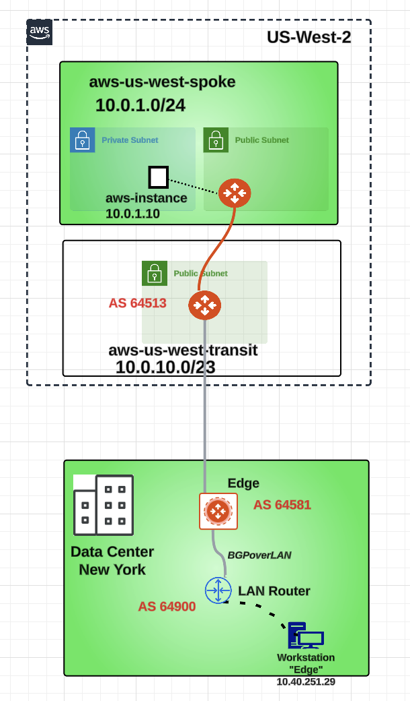
Now it’s time to establish Edge Gateway to AWS Cloud attachment!
Go to CoPilot > Cloud Fabric > Hybrid Cloud > Edge Gateways and click on the "Manage Gateway Attachment" button, on the right-hand side of the screen.
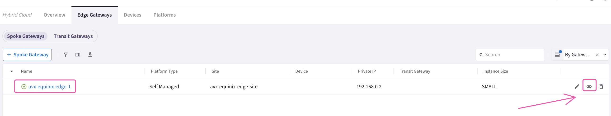
Click on the "+Attachment" button.
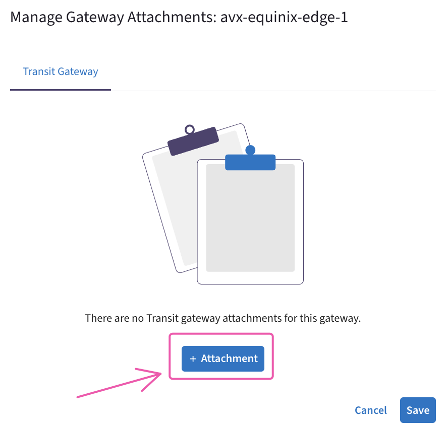
Fill in the attachment template using the following settings:
Transit Gateway: aws-us-west-transit
Local Edge Gateway Interfaces: WAN(etho)
Attach over: Public Network
Do not forget to click on Save.
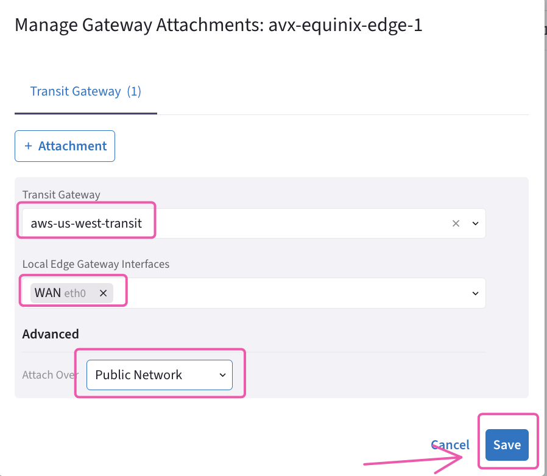
Wait a few seconds for the Aviatrix Controller to establish the attachment. You will then see a confirmation message like below, indicating that the operation has been successfully completed.
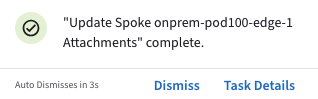
Let’s verify the presence of the attachment previously created on the Topology.
Go to CoPilot > Cloud Fabric > Topology > Overview (default).
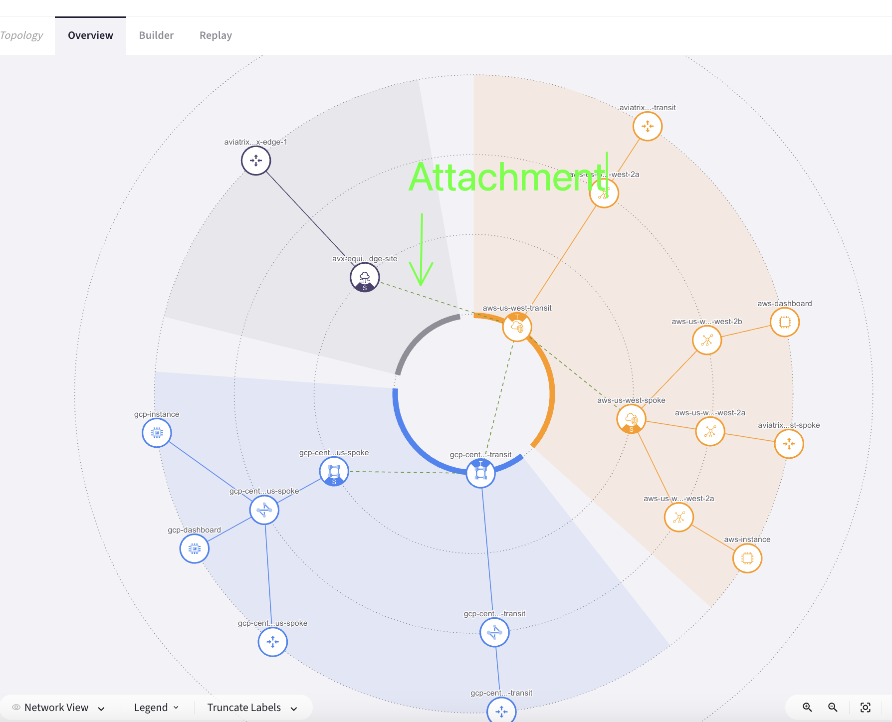
4.2. Attachment between Edge and the Local Lan Router#
Now it’s time to establish Edge Gateway to Local Lan Network
Go to CoPilot > Networking > Connectivity > External Connections(S2C) and click on the "+External Connection To" and select "External Device"
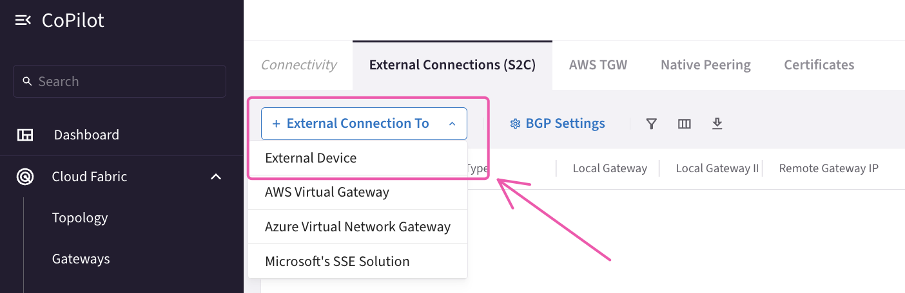
Fill in the External Connectivity template using the following settings:
Name: Edge-Onprem-Lan
Connect Using: BGP
Type: LAN
Local Gateway: avx-equinix-edge-1
Remote ASN: 64900
Remote LAN IP: 10.40.251.1
Local LAN IP: 10.40.251.2
Do not forget to click on Save. Wait a few seconds for the Aviatrix Controller to establish the attachment. Let’s verify the presence of the LAN attachment previously created on the Topology.
Go to CoPilot > Cloud Fabric > Topology > Overview (default).
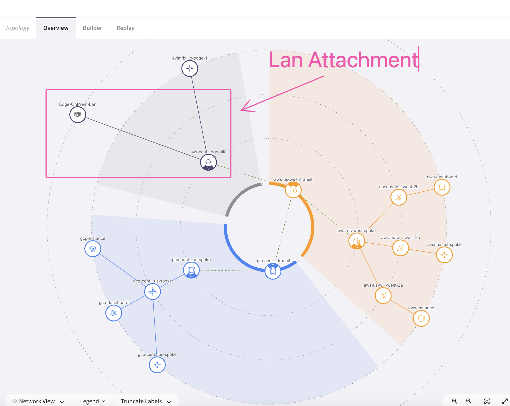
The On-Prem Edge device is now connected to both the local LAN and the cloud. By default, the Edge device advertises all cloud routes to the LAN router and all LAN routes learned from the LAN router to the cloud. This configuration establishes a path from on-premises to both AWS and GCP. Connectivity is confirmed on both the GCP and AWS gatus dashboards
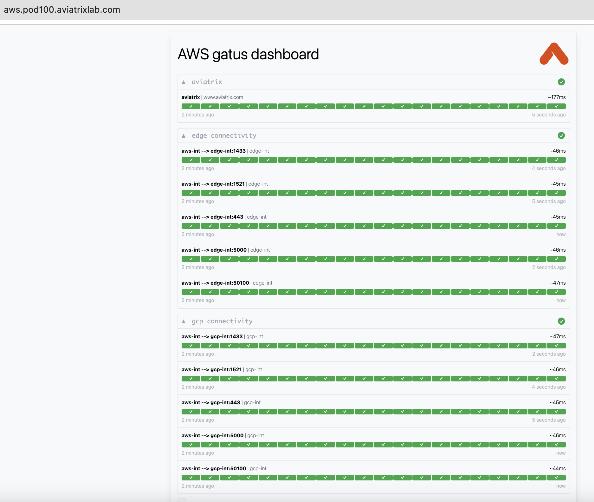
This is how the Topology would look like after the creation of the attachment. 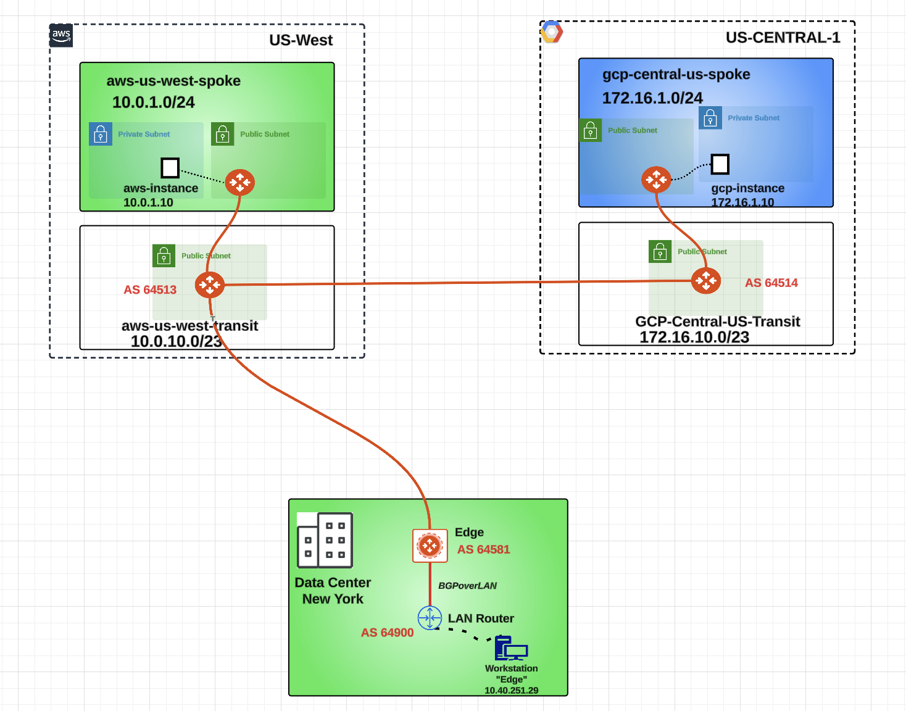
The Edge device allows to extend all the Aviatrix functionalities to the remote DC!
4.3. Attachment between Edge and the GCP Transit#
Let’s establish a peering between the Aviatrix Edge device and the GCP Transit Gateway in us-central-1.

Go to CoPilot > Cloud Fabric > Hybrid Cloud > Edge Gateways and click on the "Manage Gateway Attachment" button, on the right-hand side of the screen.
Click on the "+Attachment" button.
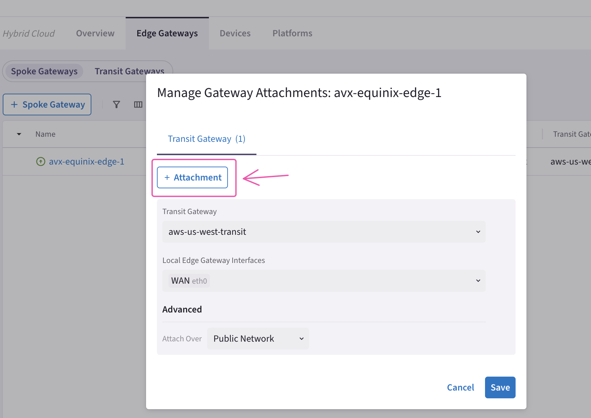
Fill in the attachment template using the following settings:
Transit Gateway: gcp-central-us-transit
Local Edge Gateway Interfaces: WAN(etho)
Attach over: Public Network
Do not forget to click on Save.
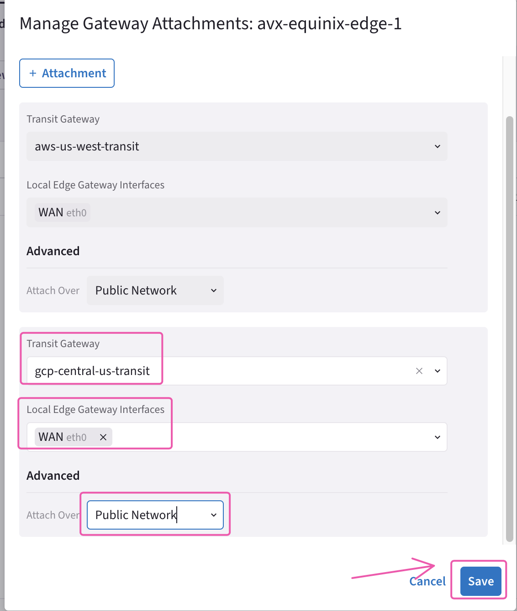
Wait a few seconds for the Aviatrix Controller to establish the attachment. You will then see a confirmation message like below, indicating that the operation has been successfully completed.
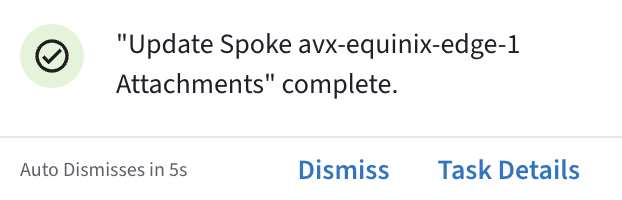
Let’s verify the presence of the attachment previously created on the Topology.
Go to CoPilot > Cloud Fabric > Topology > Overview (default).
6. Edge: “It’s more than a Spoke GW””#
The Aviatrix Edge device is capable to be connected to multiple Transit Gateways, simultaneously, thus the Edge device is regarded much more than a classic Spoke gateway.
Let’s connect the Edge device also to the Transit Gateway in US-Central-1 in GCP.

Fig. 2 New Attachment towards GCP#
Once again, you have to configure a BGP ASN on the gcp-us-central1-transit GW first, before deploying any new attachments.
Go to CoPilot > Cloud Fabric > Gateways > Transit Gateways and click on the gcp-us-central1-transit.

Fig. 3 gcp-us-central1-transit#
Select the "Settings" tab and then expand the "Border Gateway Protocol (BGP)" section and insert the AS number 64514 on the empty field related to the “Local AS Number”, then click on Save.

Fig. 4 BGP ASN#
Now you are ready to proceed with the rest of the configuration on the Edge section!
Go to CoPilot > Cloud Fabric > Hybrid Cloud > Edge Gateways and click on the "Manage Gateway Attachment" button, on the right-hand side of the screen.

Fig. 5 Manage Gateway Attachment#
Now click on the "+ Attachment" button.
You will notice the existing attachment (grayedout) with the Transit Gateway in AWS US-East-2.

Fig. 6 New Attachment#
Fill in the attachment template using the following settings:
Transit Gateway: gcp-us-central1-transit
Local Edge Gateway Interfaces: WAN(etho)
Attach over: Public Network
Caution
The High Performance Encryption option is not visible in this case, because the Aviatrix Controller is aware that the GCP Transit is already configured with HPE=off
Do not forget to click on Save.

Fig. 7 Edge Attachment Template#
Wait for 1 minute for the Aviatrix Controller to establish the attachment between the Edge and the GCP Transit Gateway.
Once the operation is completed you will be notified!

Fig. 8 Notification#
Let’s verify the presence of the new attachment previously created on the Topology.
Go to CoPilot > Cloud Fabric > Topology > Overview (default).

Fig. 9 Topology#
6.1 Edge: As-Path Prepend#
Now, let’s SSH on the EC2 aws-us-east-2-spoke1-test1 and then launch the command traceroute towards the VM gcp-us-central1-spoke1-test1 in GCP

Fig. 10 aws-us-east-2-spoke1-test1#
Install the
inetutils-traceroutepackage, typing the following command:
sudo apt install inetutils-traceroute
Caution
You will be asked to type the student’s password!

Fig. 11 inetutils-traceroute#
When you see this pop-up message, just click on the Enter button on your keyboard!

Fig. 12 confirm#
Now type the traceroute command towards the test VM in GCP:
traceroute 172.16.1.100

Fig. 13 Traceroute#
The traceroute will reveal that the destination is exactly 5 hops away.

Fig. 14 5 hops#
Let’s harness the as-path prepend feature for manipulating the traffic.
Important
The routes exchanged between transit gateways are considered BGP-like routes! This is because the Aviatrix Controller orchestrating the SD routing, also has to use a mechanism for the routing decision, and therefore these routes seem BGP routes, indeed they have some attributes similar to the attributes used with BGP routes. For instance, each Transit has its own AS PATH, and this is used for the best path selection process. Nevertheless, bear in mind that the control plane within the MCNA is based on SDN (Software Defined Networking).
The objective of this task is to define a Primary path through the Edge device, whereas the path between the Transit gateways will be used as a Backup path.

Fig. 15 Primary and Backup#
Let’s first check the Route DB of the aws-us-east-2-transit GW.
Go to CoPilot > Cloud Fabric > Gateways > Transit Gateways and select the aws-us-east-2-transit Gateway.

Fig. 16 aws-us-east-2-transit#
Select the "Route DB" tab, then on right-hand side type 172.16.1.0 on the Search field.

Fig. 17 Route DB#

Fig. 18 1 AS Path length#
From the aws-us-east-2-transit perspective, the destination route 172.16.1.0 is far just one single AS (i.e. 64514)
Now let’s apply the route manipulation. Go to CoPilot > Cloud Fabric > Gateways > Transit Gateways and click on the aws-us-east-2-transit GW.

Fig. 19 aws-us-east-2-transit#
Select the "Settings" tab and then expand the "Border Gateway Protocol (BGP)" section, then under the AS Path Prepend widget, select the gcp-us-central1-transit-peering connection and type two times the AS number 64513.
Of course, then click on Save.

Fig. 20 as-path prepend#
Let’s repeat the same kind of configuration on the GCP Transit GW.
Go to CoPilot > Cloud fabric > Gateways > Transit Gateways and click on the gcp-us-central1-transit GW.

Fig. 21 gcp-us-central1-transit#
Select the "Settings" tab and then expand the "Border Gateway Protocol (BGP)" section, then under the AS Path Prepend widget select the aws-us-east-2-transit-peering connection and type two times the AS number 64514.
Click on Save to apply the change!

Fig. 22 as-path prepend#
Now go to CoPilot > Cloud Fabric > Gateways > Transit Gateways and click on the aws-us-east-2-transit GW, then select the "Route DB" tab and then once again, on the right-hand side, type 172.16.1.0/24 inside the Search field. This time the AS Path Length will turn out being equal to 3, due to to the route manipulation that harnessed the as-path prepend feature.

Fig. 23 As path length = 3#
Now, let’s launch again the traceroute towards 172.16.1.100 from the aws-us-east-2-spoke1-test1.

Fig. 24 traceroute#
The traceroute is still showing the Transit peering between AWS and GCP as the preferred path, although the as-path prepend was correctly applied earlier.
There is another option that needs to be enabled in order to complete this lab.
Go to CoPilot > Cloud Fabric > Hybrid Cloud > Edge Gateways and click on the Edge device.

Fig. 25 Edge#
Select the "Settings" Tab and then expand the "Routing" section, afterwards turn on the knob Transitive Routing and do not forget to click on Save.

Fig. 26 edge#
7. Final verification#
Let’s relaunch the traceroute towards 172.16.1.100 from the aws-us-east-2-spoke1-test1.

Fig. 27 traceroute#

Fig. 28 6 Hops#
Now go back to CoPilot > Cloud Fabric > Gateways > Transit Gateways and click on the aws-us-east-2-transit GW, then select the "Route DB" tab and then once again, on the right-hand side, type 172.16.1.0 inside the Search field.
This time the AS Path Length will turn out being equal to 2.
The best path is via the Edge!

Fig. 29 As path length = 2#
After this lab, this is how the overall topology would look like:

Fig. 30 Final Topology for Lab 8#